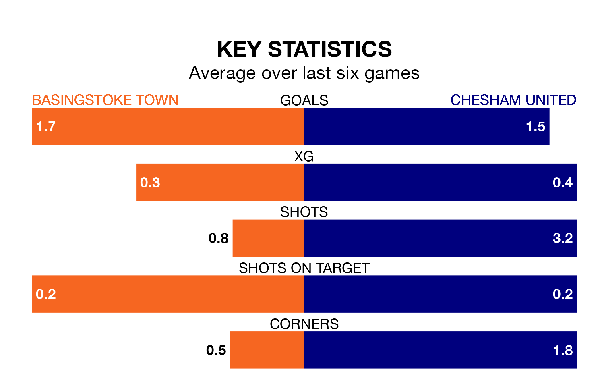

Chesham United are strong favourites to take all three points despite Basingstoke Town's home advantage in Saturday's match.
*Betting Company* are offering odds of 1.74 on Chesham sealing the win, with the visitors sitting first in the Southern League Premier South table.
Basingstoke, who are 11th in the league and 34 points behind Chesham, are priced at 3.57 to win. A draw is set at 3.97.
With 71 goals in 35 games so far this season, Chesham are the league's highest scorers with 2.0 goals per game. And they are conceding fewer than average, letting in 36 goals at a rate of 1.0 per game.
Basingstoke are also above average scorers, with 1.8 goals per game, compared to a league average of 1.7. They have conceded 2.1 goals per game.
In the last 10 years, Basingstoke and Chesham have played each other on seven occasions. Basingstoke won two of them and Chesham five.
On average, Basingstoke scored 1.7 goals and Chesham 2.4 in those matches.
Their last meeting was on November 25, when Chesham won 2-0 at home.
Town are in fantastic form in the Southern League Premier South, with five wins and one loss from their last six games.
With four wins and a draw over that period, United's form is slightly worse – they have taken 13 points from 18, compared to the home team's 15.
Basingstoke's last match was on March 9, a 3-2 win against Hendon.
Chesham beat AFC Totton 2-0 last time out, on March 16.
Updated: 10:19 (UTC), 22/03/24